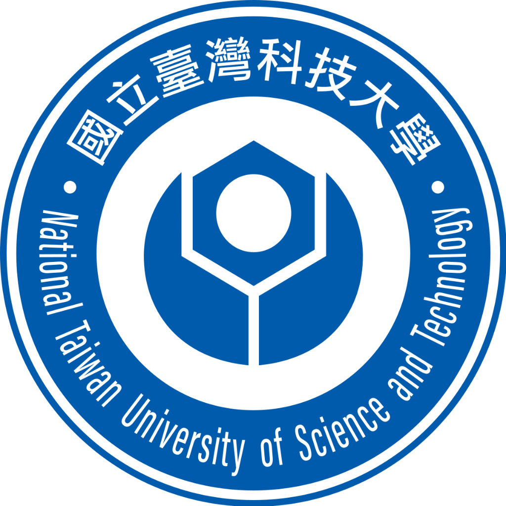

AWS Certified Solutions Architect - Associate
AWS
Issued: Oct 2026
Expires: Oct 2029
Active
Hi, I'm
An AWS-certified Cloud Engineer bridging complex cloud operations with clear technical communication. Currently operating multi-account AWS environments across dev, pre-production, and production stages. after completing international R&D in Taipei, I pair reliable infrastructure management with thorough documentation and knowledge sharing, backed by two IEEE-published research papers.

Telecommunication Engineering (GPA: 3.84/4.00)
Coordinator Research Assistant
President
PT Mastersystem Infotama Tbk · Jakarta
Full-time
BMW Laboratory, NTUST · Taipei
InternshipNoLimit Indonesia · Bandung
Freelance
AWS
Issued: Oct 2026
Expires: Oct 2029


Published in: 2025 IEEE International Symposium on Future Telecommunication Technologies (SOFTT)
Date of Conference: 26-28 August 2025
Published in: 2024 IEEE International Conference on Communication, Networks and Satellite (COMNETSAT)
Date of Conference: 28-30 November 2024
Issued by Perhumas Muda Bandung x Nutrifood x NoLimit
Issued by UGM
Issued by Microsoft
Issued by HMPS MANAJEMEN PERDAGANGAN UNS